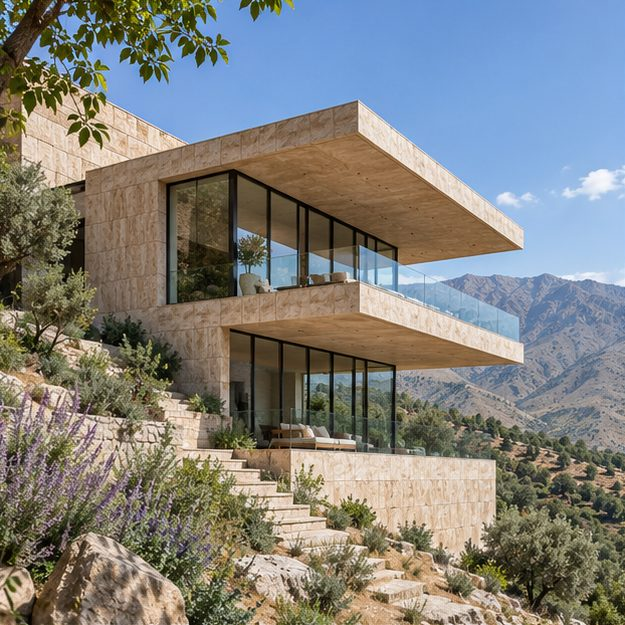
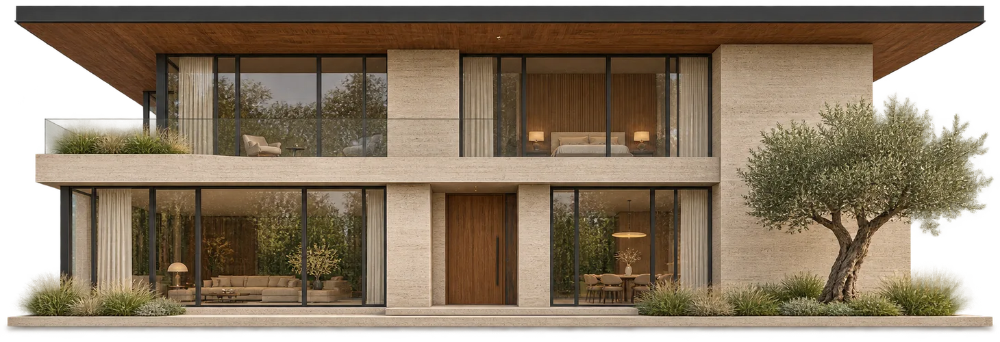
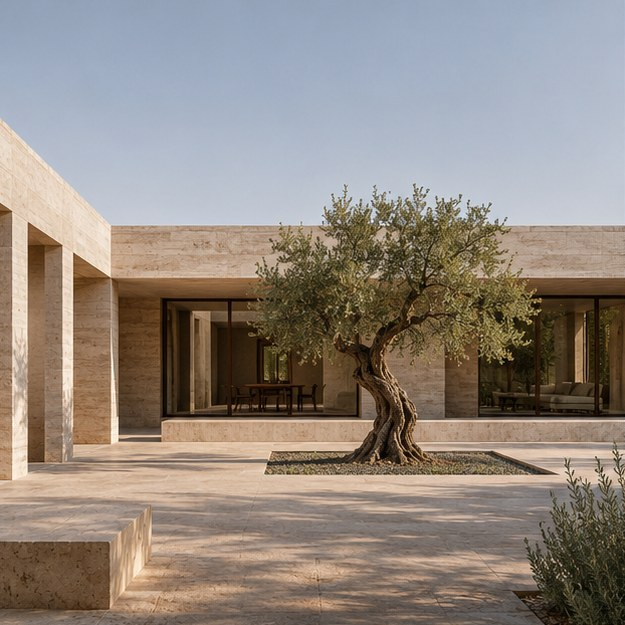
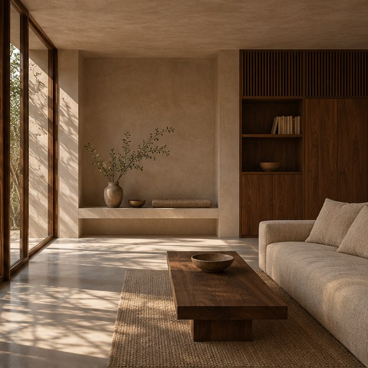
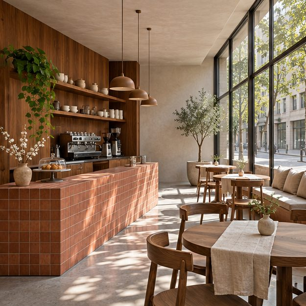
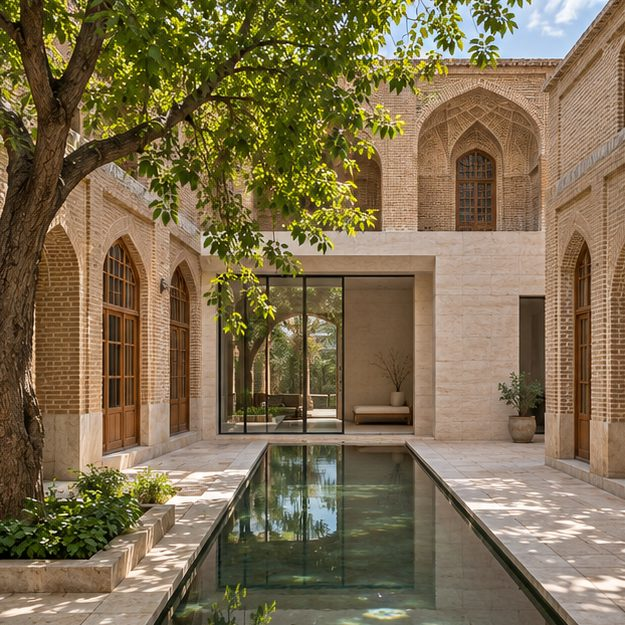
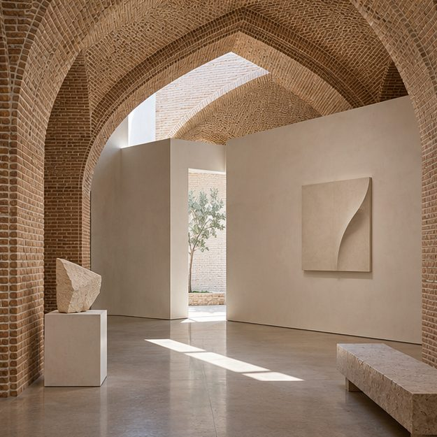
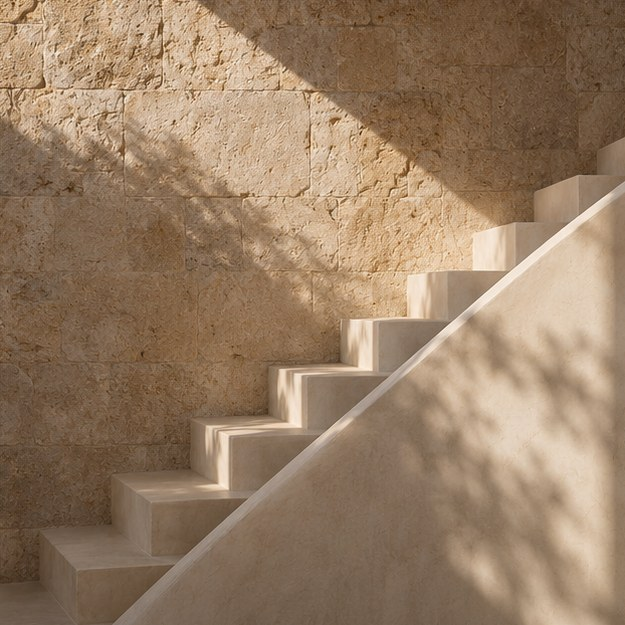

معماری مسکونی
ویلای خطِ افق
دو حجم کشیده روی شیب مینشینند و منظره را از اتاق نشیمن تا تراس قاب میگیرند.
به نور، مصالح و شیوهٔ استفاده از فضا نگاه میکنم تا هر طرح از نیازهای واقعی همان مکان شکل بگیرد.

از طراحی یک خانه تا بازآفرینی یک بنای قدیمی. برای دیدن پروژههای هر حوزه، دستهاش را انتخاب کنید.

معماری مسکونی
دو حجم کشیده روی شیب مینشینند و منظره را از اتاق نشیمن تا تراس قاب میگیرند.

معماری مسکونی
رواقی سنگی میان اتاقها و حیاط مینشیند و سایهاش در طول روز به اطراف درخت زیتون میرسد.

طراحی داخلی مسکونی
کمدها و قفسهها در یک دیوار چوبی جمع میشوند تا جای نشستن کنار پنجره آزاد بماند.

طراحی داخلی تجاری
پیشخوان سفالی مسیر سفارش را مشخص میکند و میزهای کنار پنجره برای مکث و گفتوگو جا باز میکنند.

بازآفرینی خانهٔ قدیمی
طاقهای آجری حفظ میشوند و یک فضای نشیمن تازه کنار حوض باریک به حیاط اضافه میشود.

بازآفرینی فضای فرهنگی
دیوارهای روشن برای نمایش آثار زیر طاق آجری قرار میگیرند و بازشوی سقف مسیر حرکت را روشن میکند.

این مجموعه به طراحی خانهها، فضاهای داخلی و بازآفرینی بناها میپردازد. نور طبیعی، بافت مصالح و نحوهٔ استفاده از فضا در شکلگیری هر طرح نقش دارند.
راههای ارتباطیاز فضایی که دارید و تغییری که برایش در نظر گرفتهاید بگویید.